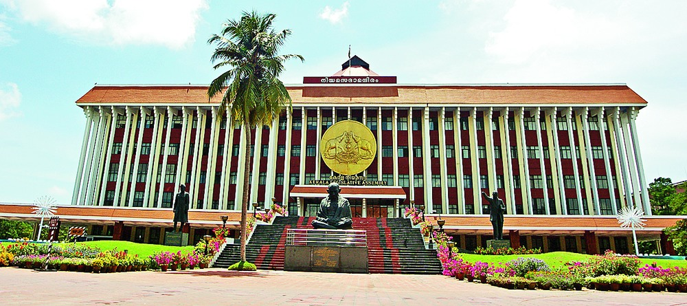
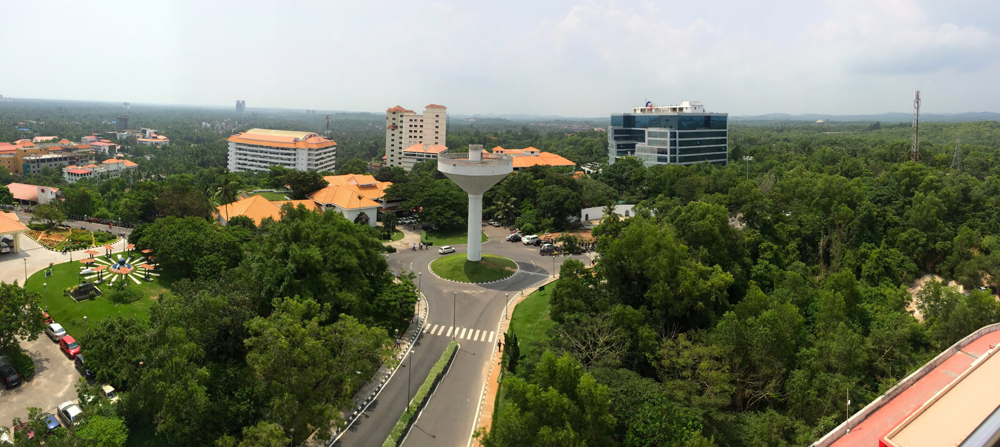

.jpg)
A Vishnu temple with a massive fort gateway has been built in Dravidian style and is closed to non-Hindus.
Last updated 3 mins ago
Poovar is one of the natural wonders where, the lake, river, sea and the beach meet the land. A rare find in Kerala, the southern state of India. In Poovar, you get to experience the remarkable sight of the Neyyar river, Poovar lake, Arabian sea and the Gold Sand Beach converging at the estuary. There are lots of exotic resorts and tour operators who offer tour packages based on your needs and requirements. Sai Boat Club in Poovar is one such tour operator who offers “An unique backwater boating experience” and they were our tour coordinators for the day.
Last updated 3 mins ago
This is a well known beach in India. situated in Trivandrum district nearby vizhinjam port...We were started our one hour and 10 minute travel from east fort. daily buses also available. At Evening it the best time to relax. with the beauty of island...sea...the greenery..
Last updated 3 mins ago